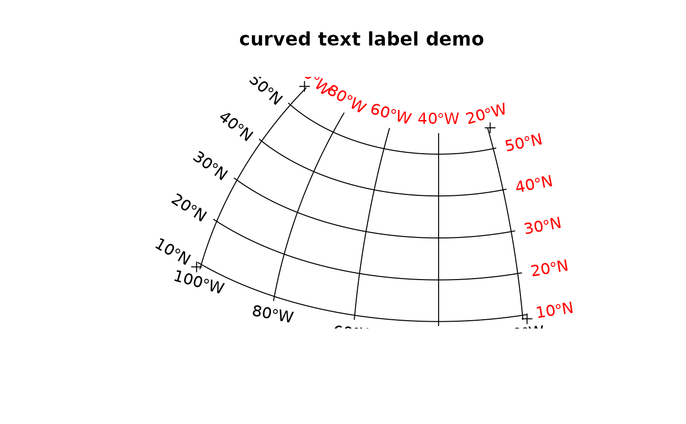

gridlines.RdCreate N-S and E-W grid lines over a geographic region; create and plot corresponding labels
gridlines(x, easts = pretty(bbox(x)[1,]), norths = pretty(bbox(x)[2,]),
ndiscr = 100)
gridat(x, easts = pretty(bbox(x)[1,]), norths = pretty(bbox(x)[2,]),
offset = 0.5, side = "WS")
# S3 method for class 'SpatialLines'
labels(object, labelCRS, side = 1:2, ...)
# S3 method for class 'SpatialPointsDataFrame'
text(x, ...)object deriving from class Spatial-class
numeric; east-west values for vertical lines
numeric; north-south values for horizontal lines
integer; number of points used to discretize the line, could be set to 2, unless the grid is (re)projected
offset value to be returned, see text
SpatialLines-class object, as returned by gridlines
the CRS in which the grid lines were drawn and labels should be
printed; if missing, the CRS from object is taken
for labels: integer, indicating side(s) at which gridlines labels will be drawn:
1=below (S), 2=left (W), 3=above (N), and 4=right (E);
for gridat: default “WS”, if “EN” labels placed on the top and right borders
for labels: ignored; for text: arguments passed on
to text, see below for example use of adj
gridlines returns an object of class
SpatialLines-class, with lines as specified; the return
object inherits the projection information of x; gridat
returns a SpatialPointsDataFrame with points at the west and south
ends of the grid lines created by gridlines, with degree
labels.
The labels method for SpatialLines objects returns a
SpatialPointsDataFrame-class object with the parameters needed
to print labels below and left of the gridlines. The locations for
the labels are those of proj4string(object) the labels also
unless labelCRS is given, in which case they are in that CRS.
This object is prepared to be plotted with text:
The text method for SpatialPointsDataFrame puts text labels
on its coordinates, and takes care of attributes pos, labels,
srt and offset; see text.
run <- FALSE
if (requireNamespace("sf", quietly=TRUE)) run <- TRUE
data(meuse)
coordinates(meuse) = ~x+y
plot(meuse)
plot(gridlines(meuse), add = TRUE)
text(labels(gridlines(meuse)))
title("default gridlines within Meuse bounding box")
if (run) {
proj4string(meuse) <- CRS("+init=epsg:28992")
crs.longlat <- CRS("+init=epsg:4326")
meuse_ll <- spTransform(meuse, crs.longlat)
grd <- gridlines(meuse_ll)
grd_x <- spTransform(grd, CRS("+init=epsg:28992"))
# labels South and West:
plot(meuse)
plot(grd_x, add=TRUE, lty=2)
grdat_ll <- gridat(meuse_ll)
grdat_x <- spTransform(grdat_ll, CRS("+init=epsg:28992"))
text(grdat_x)
}
if (run) {
# labels North and East:
plot(meuse)
plot(grd_x, add=TRUE, lty=2)
grdat_ll <- gridat(meuse_ll, side="EN")
grdat_x <- spTransform(grdat_ll, CRS("+init=epsg:28992"))
text(grdat_x)
}
if (run) {
# now using labels:
plot(meuse)
plot(grd_x, add=TRUE, lty=2)
text(labels(grd_x, crs.longlat))
}
#> Warning: this labels method is meant to operate on SpatialLines created with sp::gridlines
if (run) {
# demonstrate axis labels with angle, both sides:
sp = SpatialPoints(rbind(c(-101,9), c(-101,55), c(-19,9), c(-19,55)), crs.longlat)
laea = CRS("+proj=laea +lat_0=30 +lon_0=-40")
sp.l = spTransform(sp, laea)
plot(sp.l, expandBB = c(0, 0.05, 0, .05))
gl = spTransform(gridlines(sp), laea)
plot(gl, add = TRUE)
text(labels(gl, crs.longlat))
text(labels(gl, crs.longlat, side = 3:4), col = 'red')
title("curved text label demo")
}
#> Warning: this labels method is meant to operate on SpatialLines created with sp::gridlines
#> Warning: this labels method is meant to operate on SpatialLines created with sp::gridlines

if (run) {
# polar:
pts=SpatialPoints(rbind(c(-180,-70),c(0,-70),c(180,-89),c(180,-70)), crs.longlat)
polar = CRS("+init=epsg:3031")
gl = spTransform(gridlines(pts, easts = seq(-180,180,20), ndiscr = 100), polar)
plot(spTransform(pts, polar), expandBB = c(.05,0,.05,0))
lines(gl)
l = labels(gl, crs.longlat, side = 3)
l$pos = NULL # pos is too simple, use adj:
text(l, adj = c(0.5, -0.5))
l = labels(gl, crs.longlat, side = 4)
l$srt = 0 # otherwise they end up upside-down
text(l)
title("grid line labels on polar projection, epsg 3031")
}
#> Warning: this labels method is meant to operate on SpatialLines created with sp::gridlines
#> Warning: this labels method is meant to operate on SpatialLines created with sp::gridlines
if (FALSE) { # \dontrun{
if (require(maps)) demo(polar) # adds the map of the antarctic
} # }